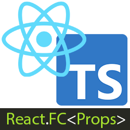

This website is the detailed Plan For My Next Two Years In Tech
 I aim to master React and TypeScript comprehensively, beginning with foundational prerequisites and core concepts. I will delve into advanced topics such as React hooks (useState, useEffect), state management with Redux, routing with React Router, form handling, styling approaches (CSS Modules, Styled Components), testing (Jest, React Testing Library), build tools (Webpack, Babel), and performance optimization techniques (memoization, code splitting). Integrating TypeScript will enhance type safety in components, hooks, and state management, ensuring robust and scalable web applications with clearer code and improved development efficiency. This journey will equip me with the skills needed for modern frontend development.
I am planning to master Next.js by focusing on server-side rendering, API routes, dynamic routing, data fetching, deployment strategies, testing, and performance optimization. Additionally, I aim to excel in Express.js, particularly in middleware, routing, RESTful APIs, error handling, and authentication with Passport.js. These skills will equip me to effectively build robust, scalable web applications and APIs, emphasizing practical application and real-world scenarios to confidently implement these technologies in projects.
My focus is on mastering SQL and MongoDB databases, emphasizing schema design, optimized querying techniques, effective indexing strategies, transaction management, and robust data modeling. These skills are pivotal for developing scalable and efficient database solutions, crucial in ensuring seamless data management for diverse application needs. By understanding the nuances of SQL for structured data and MongoDB for flexible document-based storage, I aim to adeptly handle complex data structures and improve application performance through proficient database management. This expertise will enable me to contribute effectively to projects requiring reliable data storage, retrieval, and manipulation, aligning with industry standards and best practices in database administration and development.
I plan on mastering Node.js and other backend technologies, encompassing server-side JavaScript development, asynchronous programming, building RESTful APIs, middleware integration, database management (e.g., SQL, MongoDB), authentication and authorization mechanisms, deploying scalable applications, and finally becoming a full-stack web developer. These skills will enable me to excel in backend development, efficiently managing data and integrating seamlessly with frontend frameworks to deliver comprehensive, scalable web solutions.
I'm Chieke Chukwuemeka, a frontend web developer proficient in HTML, CSS, JavaScript, and React. I specialize in building responsive and interactive user interfaces, leveraging modern frontend frameworks and technologies. With expertise in component-based architecture, state management, and responsive design principles, I create intuitive web applications that prioritize user experience. I ensure accessibility and performance optimization through semantic HTML, CSS preprocessors, and JavaScript frameworks. Proficient in version control with Git and experienced in testing with Jest, I am committed to continuous learning and innovation in frontend development to deliver robust, scalable solutions aligned with industry standards.